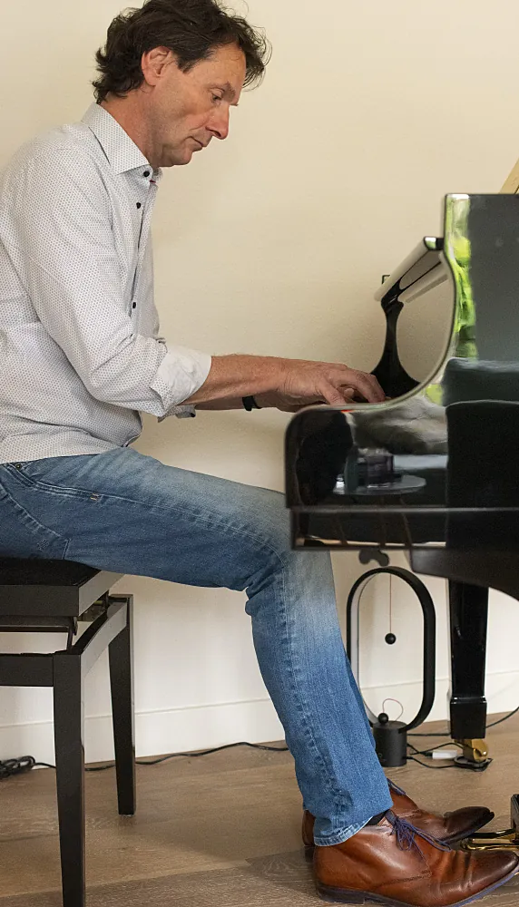
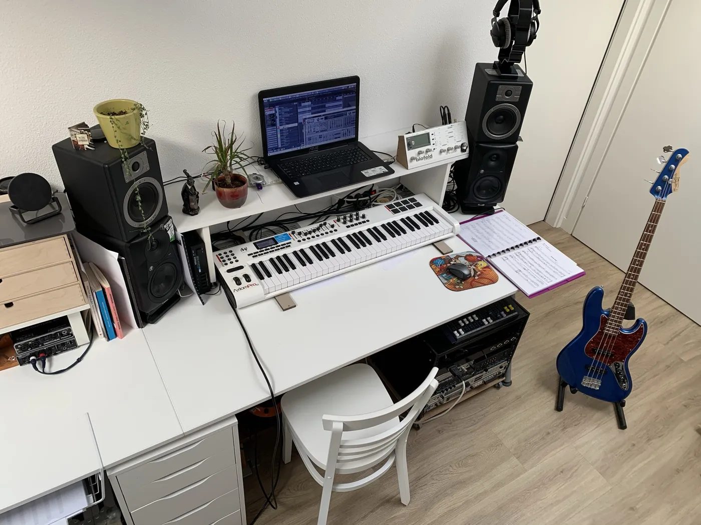
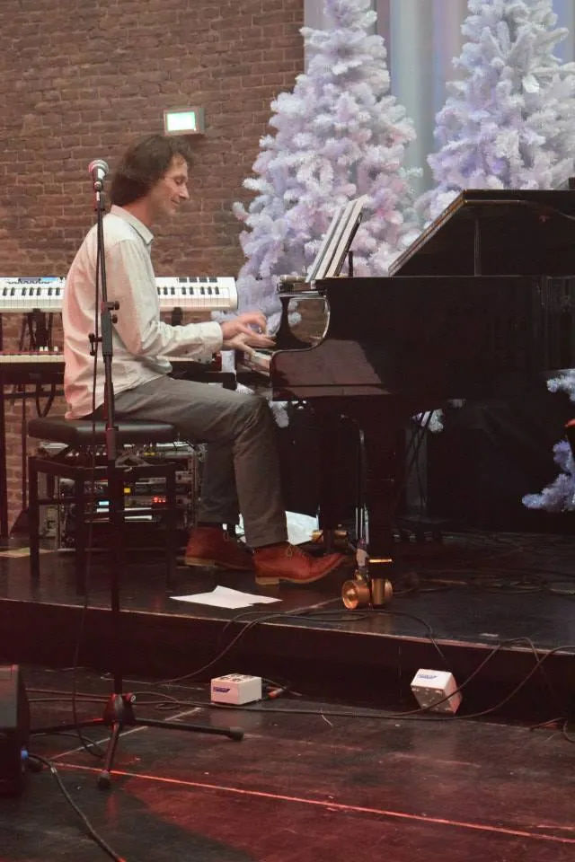
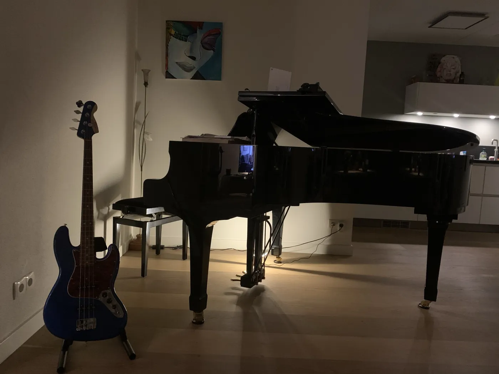

Een leven vol muziek
Naast het lesgeven begeleidt Wim artiesten, speelt hij als gast in verschillende formaties en componeert hij in zijn eigen studio.

Van klassiek naar jazz
"Mijn passie voor muziek wil ik met je delen."
Een leven zonder muziek kan Wim zich niet voorstellen. Hij kreeg zijn eerste klassieke pianoles toen hij negen was. Op de middelbare school kwam hij in aanraking met lichte muziek en speelde hij liedjes op het gehoor na.
Dat inspireerde hem tot jazz- en improvisatielessen. Daar ontdekte hij dat musiceren meer is dan thuis achter de piano zitten: hij ging spelen in allerlei formaties, stijlen en bezettingen.
Zijn opleiding
- Klassieke pianolesVanaf zijn negende
- Jazz en improvisatieLes bij jazzpianist Ludo Doomernik en klassiek pianiste Hélena Putintseva
- Fontys ConservatoriumOnder anderen bij Kees Schoonenbeek en Willem Kühne
- Componist en arrangeurEigen composities en arrangementen, opgenomen in de thuisstudio

Op het podium
"Leren van elkaar én plezier hebben in het spelen."
Van klassiek en jazz tot funk en rock. Samen genieten en anderen laten genieten staat voorop.
Dutch X-Ing
Het project van gitarist, bandleider en componist Twan van Gerven. Na twee dagen oefenen in eenzame opsluiting gaven negen muzikanten een concert voor vrienden en intimi, en dat werd live opgenomen als album. Een reis langs jazz, funk, rock en fanfare, met een vleugje Zappa.
Missie X-Mas Band
- Paul van de Ven, basgitaar
- Mark Boon, gitaar
- Jan-Willem van den Akker, vocals
- Paul Damen, drums en bandleider


Uit de praktijk
- Arrangementen op jouw niveau
- Ervaring met begeleiden
- Jouw smaak bepaalt de stijl
"Ik help je om muzikaal het beste uit jezelf te halen."
Plan je gratis proefles